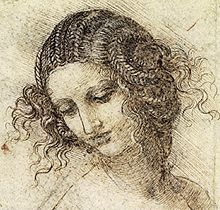

La coiffure est l'art d'arranger les cheveux, éventuellement de modifier leur aspect extérieur. Cet art implique différents types d’interventions : couper les cheveux, les lisser ou les défriser, les tresser, les teindre, les décolorer, les poudrer, les enduire de substances variées, leur adjoindre de faux cheveux (sous la forme d'une perruque ou d'un postiche ou rallonge capillaire qui consiste à garder les vrais cheveux et à seulement augmenter la longueur) ou les ornementer de façon plus ou moins sophistiquée selon les cultures et les civilisations. Un rapide descriptif des coiffures permet de cerner leur richesse ainsi que leur fonction sociale. Les égyptiens portaient des cheveux courts tout en laissant les oreilles bien dégagées même si certains étaient rasés ou portaient les cheveux mi-longs bouclés et dégradés pour former une sorte de bonnet. Les hommes ne changeaient de coiffure que lorsqu'ils commençaient à devenir chauves. Aucun égyptien ne portait la barbe, se distinguant ainsi des Hittites « barbares » (exception faite des barbes postiches des pharaons). Les coiffures féminines étaient beaucoup plus variées, souvent plus longues. Les cheveux pouvaient être lisses, frisés, ondulés, nattés ou attachés en une queue-de-cheval. Sous l'Ancien Empire (2575-2134 av. J.-C.), les femmes préféraient avoir les cheveux courts ou mi-longs alors que sous le Nouvel Empire (1550-1070 av. J.-C.), la mode était aux cheveux longs ou aux perruques. Dans les deux cas, l'ornementation était abondante : diadème, perles (en or, en pierres précieuses, en ivoire, etc.), épingles, peignes, fleurs, etc. Que ce soient les hommes, les femmes ou les enfants de toutes classes, tous les égyptiens pouvaient porter des perruques. Elles faisaient partie intégrante de la garde robe. Il en existait de tous les styles et toutes les longueurs. Les riches portaient des perruques en cheveux naturels alors que les plus pauvres devaient se contenter de perruques faites avec de la laine ou des fibres végétales. Vu leur prix, elles étaient aussi choyées que les chevelures naturelles et n'étaient sorties que pour les banquets et les cérémonies. Le perruquier était un personnage important dans la vie quotidienne égyptienne. « Ce qui n’a pas empêché les premiers égyptologues d’affirmer sans la moindre hésitation que la raison pour laquelle les Égyptiens, qui étaient blancs, se rasaient la tête et portaient des perruques, était sanitaire ou esthétique. Mais les musées du Caire comme du Louvre conservent des perruques égyptiennes de pharaons et de hauts dignitaires, toutes composées de cheveux crépus. En toute logique symbolique, une classe dirigeante blanche n’aurait jamais eu l’idée de se coiffer de perruques composées de cheveux d’inférieurs ou d’esclaves. Et quand on sait les efforts douloureux qu’impose quotidiennement l’entretien d’une chevelure crépue, il est évident que le rasage et les perruques sont des commodités caractéristiques d’une société mélanoderme, donc noire ou fortement métissée, telle qu’était la société égyptienne il y a huit mille ans »2. Les serviteurs et les esclaves devaient pouvoir être reconnus au premier coup d'œil. C’est pourquoi, ils nouaient leurs cheveux sur la nuque en faisant une sorte de boucle ou ils se faisaient huit ou neuf tresses qu'ils attachaient à l'arrière de leur tête et qu'ils laissaient pendre sur un côté de la face et du cou. Les prêtres étaient obligés de se raser tout le corps car ils devaient être le plus purs possible pour se présenter devant le dieu. C'est pourquoi ils sont toujours représentés chauves sans sourcils ni cils Les danseuses étaient dans l'impossibilité de porter une perruque qui aurait gêné leurs mouvements mais elles se faisaient une multitude de tresses terminées par des disques de métal qui mettaient en valeur la grâce de leurs acrobaties.
